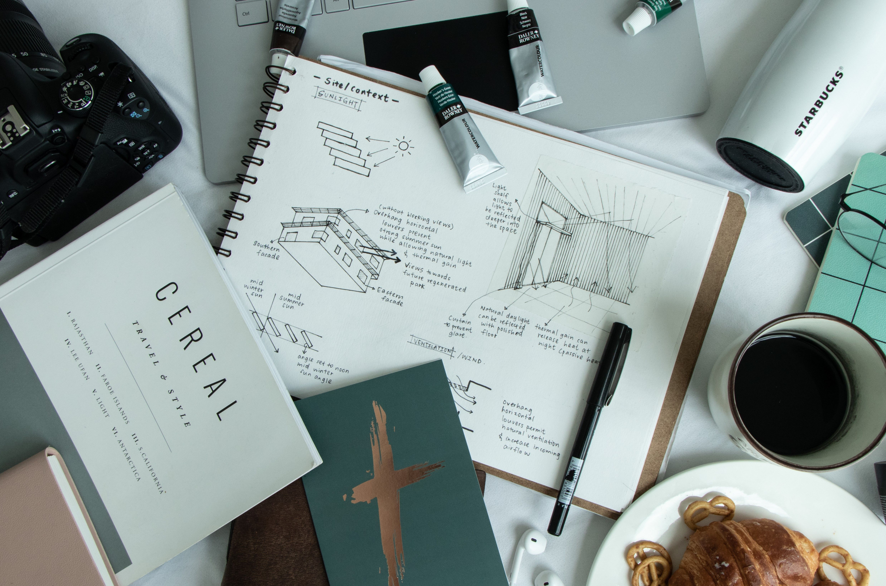

Creative Director
Raka Pratama
Menyusun arah visual, konsep kreatif, serta memastikan keselarasan pesan di seluruh aset proyek.
Setiap proyek dikelola melalui pembagian peran yang jelas agar proses konsep, produksi visual, dan pengembangan web berjalan selaras.

Menyusun arah visual, konsep kreatif, serta memastikan keselarasan pesan di seluruh aset proyek.

Menangani pengambilan foto produk, dokumentasi studio, serta penyuntingan video singkat.

Menerjemahkan rancangan tata letak menjadi halaman web responsif dengan navigasi rapi dan teruji.
Alur kolaborasi terstruktur agar klien menerima hasil yang konsisten dari tahap perencanaan hingga publikasi.
Menyelaraskan tujuan proyek, palet visual, dan daftar kebutuhan foto, video, atau halaman web.
Eksekusi sesi pemotretan, perekaman video sampel, serta penyusunan struktur tata letak antarmuka.
Menyeleksi hasil akhir terbaik, merapikan detail responsif, dan menyerahkan aset siap pakai.
Lihat hasil karya pada 15 portofolio kami atau kirimkan kebutuhan proyek Anda melalui halaman kontak.